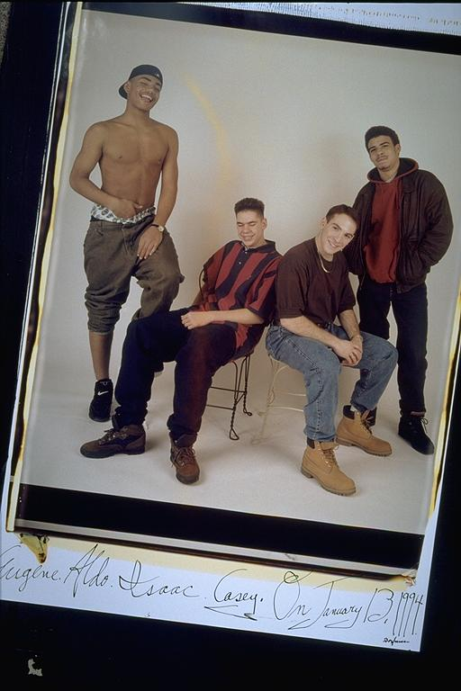

Pals: Boys Who Grew Up Together
elsadorfman.com/pals
Aldo: This is really funny. First Eugene looking like a poor man's R&B lead man. And then there's me, who's laughing but like I'm alone laughing, with my eyes shut. Isaac with this uncharacteristic, huge grin on his face, is once in a lifetime, believe me. And then Casey, who is usually bright-eyed, has eyes looking all but closed. This must have been when we were doing our pre-picture humor routine. Only this time it was caught on camera.

elsad@comcast.net